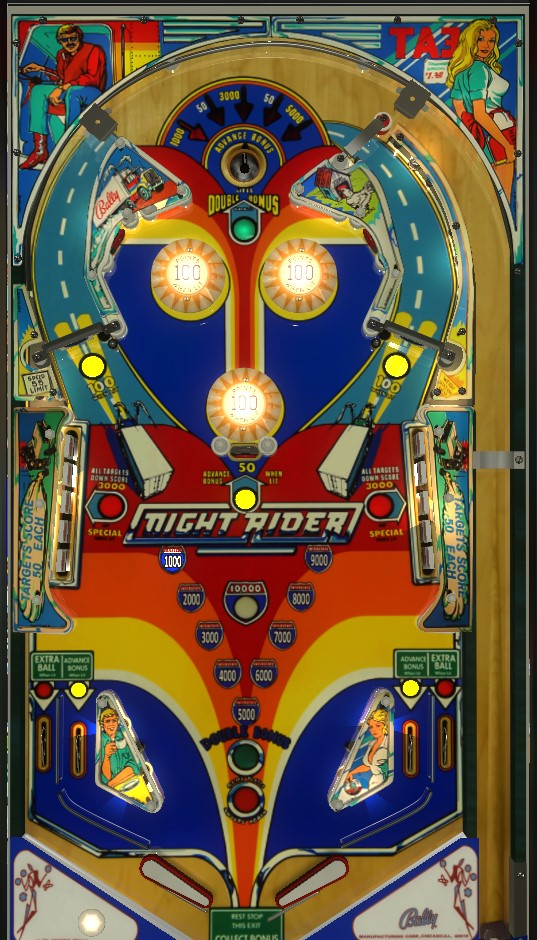

This game has both electromechanical and solid state versions. This guide was written with the solid state version in mind. Note that scoring and rules may differ slightly between versions.
Shoot to the top of the playfield through the lit spinners and try to nudge the ball into the saucer, especially when it's lit for double bonus or 5,000 points.
Can be lit for any of five values: 1,000 points and double bonus, 50 points, 3,000 points, 50 points, or 5,000 points. Whenever a 10-point or 100-point switch anywhere in the game is hit, the lit award for the top saucer will rotate through those options in the order listed. The saucer also always awards one bonus advance.
Getting 3,000 or 5,000 point awards from this saucer is pretty much the only way to squeeze decent points out of this game.
Score 100 points per spin when lit, or 10 points per spin if not. On 3 ball play, both saucers are always lit. On 5 ball play, only one saucer is lit, and this can be alternated by hitting a drop target or going through a lit in lane.
Just like the spinners, score 100 when lit and 10 if not. The bottom bumper is always lit, no matter what. On 3 ball play, both top bumpers are always lit as well. On 5 ball play, only the top bumper that is on the same side as the lit spinner will be lit.
Individual drop targets score 50 points each and award 1 bonus advance. Hitting all 10 targets will cause them all to reset, score 6,000 points, light an extra ball on one or both out lanes based on settings, and light the drop targets for special. Once special is lit, completing either bank will score 3,000 points and a special, and will reset both banks.
There are no settings that make extra ball or special worth points: they're either on or off. Thus, in competition play, the rewards for completing drop targets are too low to justify them as a shot compared to just shooting the ball back up top. Ideally, the slingshots will knock the ball into the drops every now and again, which helps pad the base bonus count.
Scores 50 points (always) and advances bonus (when lit). Always lit on 3 ball play, but is only lit in 5 ball play when the right hand spinner is lit.
Conventional in lane/out lane setup. All lanes score 50 points. The in lanes advance bonus when lit. Stop me if you've heard this one before: both lanes are always lit on 3 ball, but only one is lit on 5 ball. Going through the lit in lane on 5 ball settings will switch which side of the table has its bumper, spinner, and in lane lit.
Out lanes are lit for extra ball after completing both sets of drop targets on a single ball.
Base bonus is 15,000 points, in increments of 1,000. Bonus can be doubled on any ball by landing in the top saucer when it is lit for 1,000 points. Maximum bonus is 2x 15,000 = 30,000 points, which is very significant in this game. There is no way to collect bonus mid-ball, so once the bonus is maxed out, it's stuck there. Double bonus is not given for free on the last ball of the game, contrary to some other games from this era.
Absolutely nothing in this game carries over from ball to ball. Bonus count, the double bonus light, lit extra balls, and all drop target progress is reset when the ball drains.
Especially if playing the solid state version, don't be discouraged by low scoring. Even on 5 ball play, scoring 100,000 points is difficult, and scoring 200,000 would just be a very long grind. Recommended replay scores are 72,000 for 3 ball and 92,000 for 5 ball; the sixth digit of the score display is largely irrelevant, and scores tend to be even lower here than on other early Bally solid state games like Eight Ball. 50,000 points usually is a pretty good score.
On the electromechanical version of this machine, a buzzer plays whenever a player rolls the scoring at 100,000 points; keep this in mind so it's not startling if it goes off mid-ball.